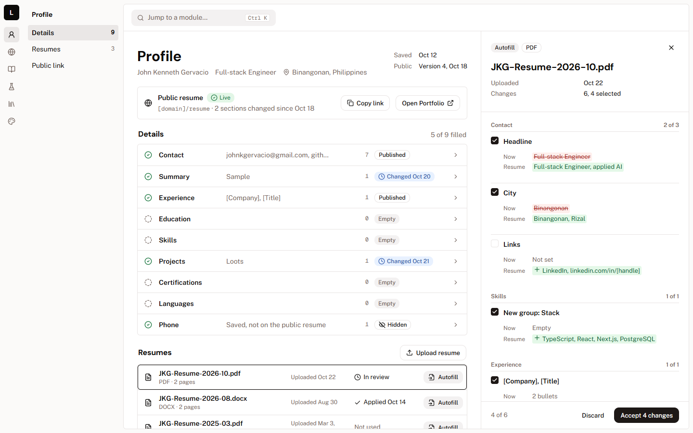
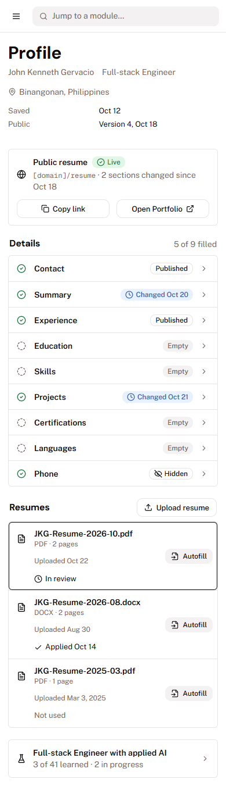
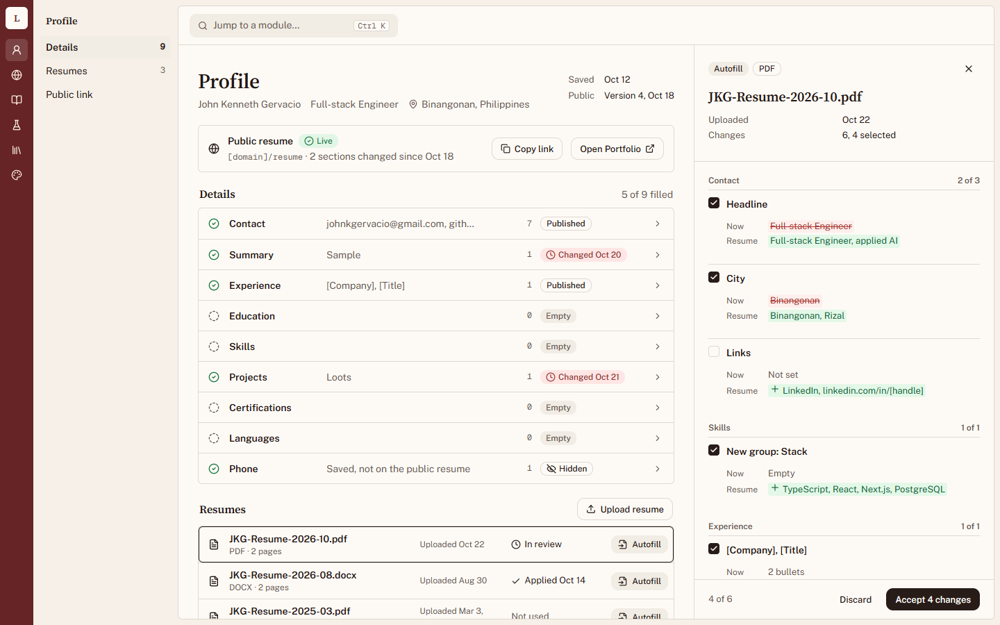
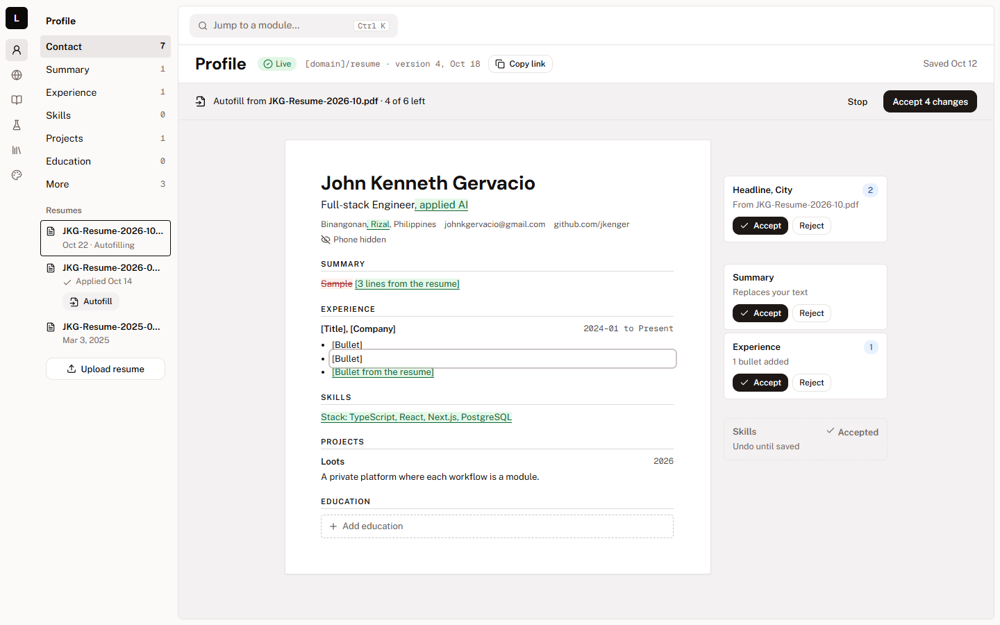
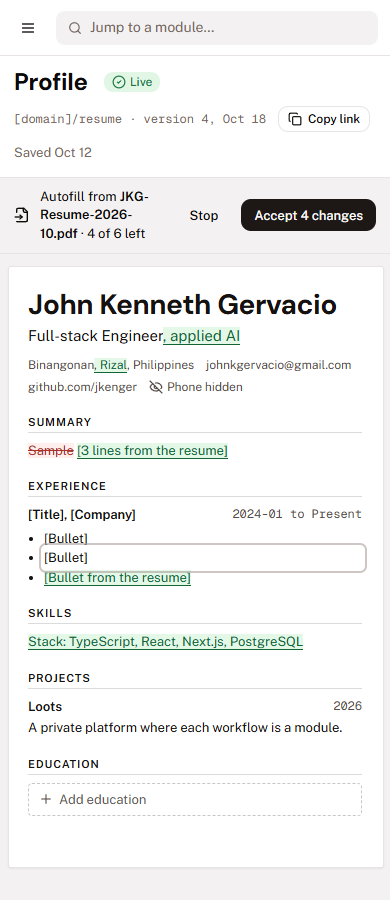
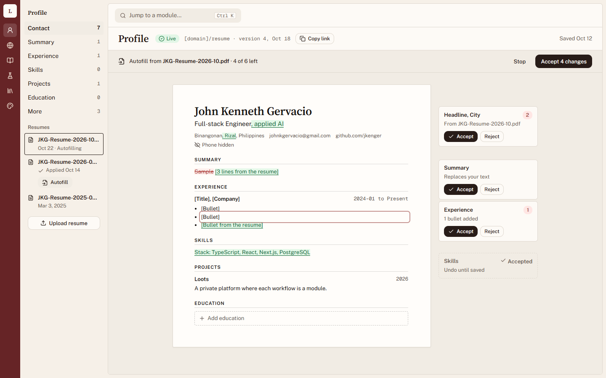
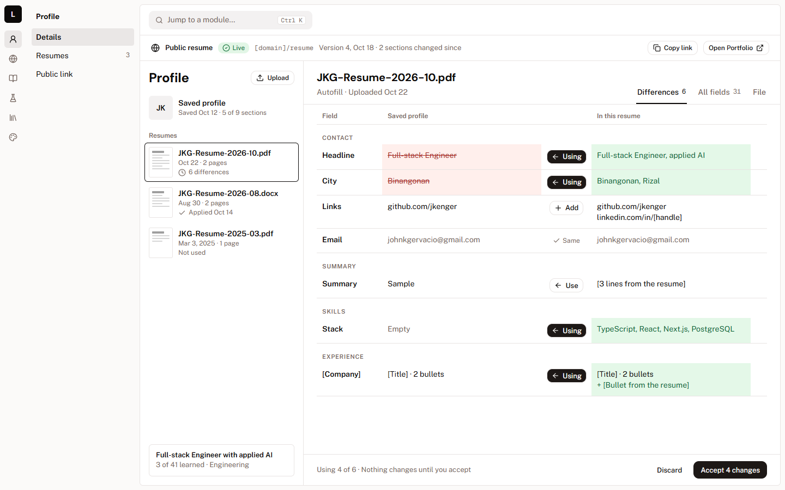
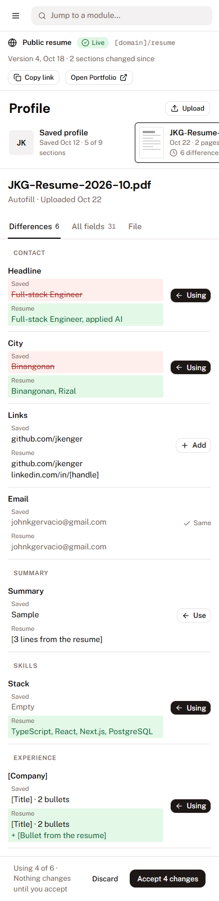
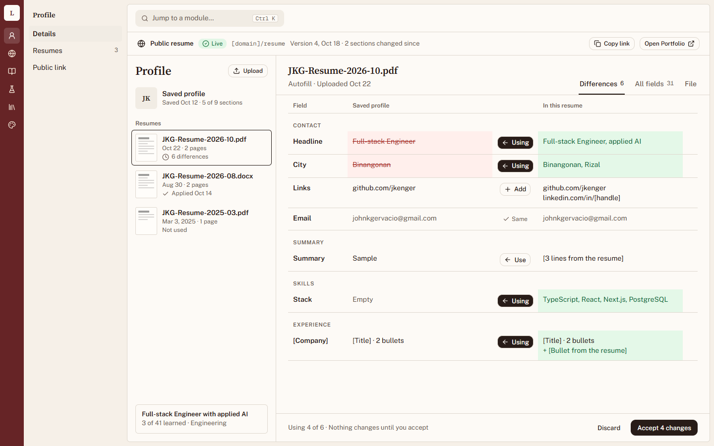

<title>Profile directions</title>
<meta name="claude:viewport-fit-sides" content="cover" />
<link
  href="https://fonts.googleapis.com/css2?family=DM+Sans:wght@600;700&family=Public+Sans:wght@400;500;600&family=Geist+Mono&display=swap"
  rel="stylesheet"
/>
<style>
  /* Layout: one column of three directions, each a row of desktop shot + facts, phone and catalog shots below. */
  :root {
    --bg: oklch(0.986 0.002 67.8);
    --card: oklch(1 0 0);
    --fg: oklch(0.147 0.004 49.3);
    --muted: oklch(0.5 0.021 43.1);
    --line: oklch(0.922 0.005 34.3);
    --chip: oklch(0.955 0.022 262);
    --chip-fg: oklch(0.45 0.14 262);
    --head: "DM Sans", system-ui, sans-serif;
    --body: "Public Sans", system-ui, sans-serif;
    --mono: "Geist Mono", ui-monospace, monospace;
  }
  @media (prefers-color-scheme: dark) {
    :root:not([data-theme="light"]) {
      --bg: oklch(0.17 0.006 49);
      --card: oklch(0.21 0.008 49);
      --fg: oklch(0.95 0.004 67);
      --muted: oklch(0.75 0.015 60);
      --line: oklch(1 0 0 / 12%);
      --chip: oklch(0.3 0.06 262);
      --chip-fg: oklch(0.85 0.08 262);
      color-scheme: dark;
    }
  }
  :root[data-theme="dark"] {
    --bg: oklch(0.17 0.006 49);
    --card: oklch(0.21 0.008 49);
    --fg: oklch(0.95 0.004 67);
    --muted: oklch(0.75 0.015 60);
    --line: oklch(1 0 0 / 12%);
    --chip: oklch(0.3 0.06 262);
    --chip-fg: oklch(0.85 0.08 262);
    color-scheme: dark;
  }
  body {
    background: var(--bg);
    color: var(--fg);
    font: 400 15px/1.55 var(--body);
    padding-left: max(16px, env(safe-area-inset-left, 0px));
    padding-right: max(16px, env(safe-area-inset-right, 0px));
    padding-block: 32px 64px;
  }
  main {
    max-width: 1120px;
    margin: 0 auto;
    display: flex;
    flex-direction: column;
    gap: 40px;
  }
  h1,
  h2 {
    font-family: var(--head);
    margin: 0;
    text-wrap: balance;
    letter-spacing: -0.015em;
  }
  h1 {
    font-size: 32px;
  }
  h2 {
    font-size: 22px;
  }
  .lead {
    color: var(--muted);
    max-width: 65ch;
    margin: 8px 0 0;
  }
  section {
    background: var(--card);
    border: 1px solid var(--line);
    border-radius: 8px;
    padding: 20px;
    display: flex;
    flex-direction: column;
    gap: 16px;
  }
  .top {
    display: grid;
    grid-template-columns: minmax(0, 2fr) minmax(0, 1fr);
    gap: 20px;
  }
  .facts {
    min-width: 0;
    display: flex;
    flex-direction: column;
    gap: 10px;
  }
  .facts p {
    margin: 0;
  }
  dl {
    margin: 0;
    display: grid;
    grid-template-columns: 88px 1fr;
    gap: 6px 12px;
    font-size: 14px;
  }
  dt {
    color: var(--muted);
  }
  dd {
    margin: 0;
  }
  .chip {
    align-self: flex-start;
    font: 500 12px var(--body);
    padding: 2px 8px;
    border-radius: 9px;
    background: var(--chip);
    color: var(--chip-fg);
  }
  a {
    color: inherit;
    text-underline-offset: 3px;
  }
  .open {
    font-weight: 600;
  }
  figure {
    margin: 0;
    min-width: 0;
  }
  figure img {
    display: block;
    width: 100%;
    height: auto;
    border: 1px solid var(--line);
    border-radius: 6px;
  }
  figcaption {
    font: 12px var(--mono);
    color: var(--muted);
    margin-top: 6px;
  }
  .row {
    display: grid;
    grid-template-columns: minmax(0, 1fr) minmax(0, 3fr);
    gap: 20px;
    align-items: start;
  }
  .row figure.phone img {
    max-height: 520px;
    object-fit: cover;
    object-position: top;
  }
  @media (max-width: 760px) {
    .top,
    .row {
      grid-template-columns: 1fr;
    }
  }
</style>

<main>
  <header>
    <h1>Profile directions</h1>
    <p class="lead">
      Three layouts for Profile with stored resumes, per-resume Autofill and the public resume link. Each opens the
      Autofill review, since that is the new job. Names and the roadmap are real; file names, the diff and the Portfolio
      version are examples. Open a prototype and add <code>?theme=catalog</code> to see it in the Course catalog look.
    </p>
  </header>

  <section>
    <div class="top">
      <figure>
        <a href="a-ledger.html"></a>
        <figcaption>a-ledger-desktop.png</figcaption>
      </figure>
      <div class="facts">
        <span class="chip">Works in any app-wide look</span>
        <h2>A. Ledger</h2>
        <p>
          Profile as a list of sections, each with its state and whether the public resume has it. Autofill opens in the
          side panel as a checklist of field changes.
        </p>
        <dl>
          <dt>Best at</dt>
          <dd>Seeing what is empty, changed or unpublished in one look</dd>
          <dt>Risk</dt>
          <dd>Editing a section is one click further away</dd>
        </dl>
        <a class="open" href="a-ledger.html">Open prototype</a>
      </div>
    </div>
    <div class="row">
      <figure class="phone">
        
        <figcaption>390px</figcaption>
      </figure>
      <figure>
        
        <figcaption>Course catalog look</figcaption>
      </figure>
    </div>
  </section>

  <section>
    <div class="top">
      <figure>
        <a href="b-sheet.html"></a>
        <figcaption>b-sheet-desktop.png</figcaption>
      </figure>
      <div class="facts">
        <span class="chip">Fits Course catalog best</span>
        <h2>B. Sheet</h2>
        <p>
          The page is the resume. Edit text where it sits; Autofill shows as tracked changes on the sheet with Accept
          and Reject notes in the margin.
        </p>
        <dl>
          <dt>Best at</dt>
          <dd>Seeing exactly what the resume will look like</dd>
          <dt>Risk</dt>
          <dd>Empty sections and hidden fields are easier to miss</dd>
        </dl>
        <a class="open" href="b-sheet.html">Open prototype</a>
      </div>
    </div>
    <div class="row">
      <figure class="phone">
        
        <figcaption>390px</figcaption>
      </figure>
      <figure>
        
        <figcaption>Course catalog look</figcaption>
      </figure>
    </div>
  </section>

  <section>
    <div class="top">
      <figure>
        <a href="c-compare.html"></a>
        <figcaption>c-compare-desktop.png</figcaption>
      </figure>
      <div class="facts">
        <span class="chip">Works in any app-wide look</span>
        <h2>C. Compare</h2>
        <p>
          Resumes on the left, the saved profile and the picked resume side by side on the right. One button per row
          pulls a value across.
        </p>
        <dl>
          <dt>Best at</dt>
          <dd>Autofill and keeping several resumes in step</dd>
          <dt>Risk</dt>
          <dd>Plain editing with no resume picked needs its own view</dd>
        </dl>
        <a class="open" href="c-compare.html">Open prototype</a>
      </div>
    </div>
    <div class="row">
      <figure class="phone">
        
        <figcaption>390px</figcaption>
      </figure>
      <figure>
        
        <figcaption>Course catalog look</figcaption>
      </figure>
    </div>
  </section>
</main>
